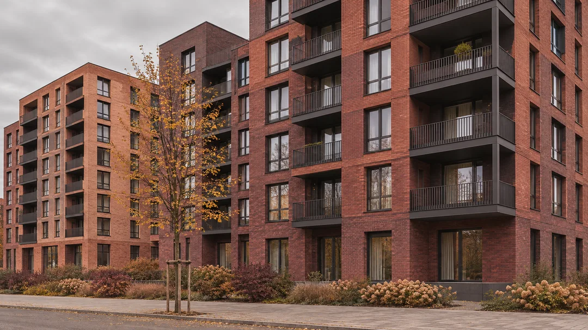

НЕЗАВИСИМЫЙ СПРАВОЧНИК
Новостройки
Минска и района
Строящиеся многоквартирные дома со сдачей до 1 января 2028 года. Сравните сроки, цену метра, планировки и условия покупки.
Смотреть дома
ВИТРИНА ОБЪЕКТОВ
Каталог домов
Загрузка…
Загружаем данные. Если список не появился, попробуйте обновить страницу.
КАК ЧИТАТЬ КАТАЛОГ
О данных
Какие объекты включены?
Дома в границах города Минска и Минского района с опубликованным плановым сроком до 01.01.2028. Это выборка открытых источников, не официальный реестр. Готовые дома, корпуса со сроком только «2027–2028» без разбивки и коммерческие помещения не включаются намеренно.
Что означают цены и планировки?
Цена за м² приводится в валюте и с оговорками источника. USD и EUR означают справочный эквивалент; без пересчёта их нельзя напрямую сравнивать с BYN. Проектный ассортимент или опубликованная партия не означают, что все варианты свободны. Для актуальных остатков и чертежей откройте карточку застройщика, для цены договора уточните также отделку, способ оплаты и паркинг.
Что проверяется автоматически?
Из витрин трёх проектов берутся сроки и, где опубликованы, цена метра и остатки. В зависимости от площадки проверка запускается раз в сутки по расписанию или при первом посещении после истечения суток. Данные из деклараций, СМИ и условия оплаты проверяются вручную. При сбое остаётся последний сохранённый срез с его датой.
Кто указан в карточке?
Заказчик указан там, где его роль подтверждена. Там, где открытый источник называет только застройщика или группу компаний, роль подписана отдельно, а юридическое лицо по договору лучше сверить в актуальной проектной декларации.